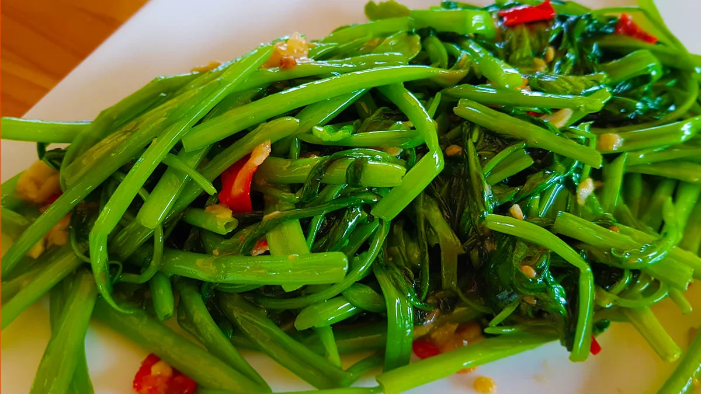

Papaya salad(som-tum)
150Bath
Tom Yum soup (Tom Yum Goong) - everybody's favourite Thai soup is easy to make and just as amazing as you get in Thailand!

Morning glory
150Bath
Tom Yum soup (Tom Yum Goong) - everybody's favourite Thai soup is easy to make and just as amazing as you get in Thailand!
Tom Yum seafood
150Bath
Tom Yum soup (Tom Yum Goong) - everybody's favourite Thai soup is easy to make and just as amazing as you get in Thailand!Fried Rice with Shrimps
This shrimp fried rice highlights the best of Chinese takeout in a quick and easy recipe. Made with rice, shrimp, peas, carrots, onion, ...Fried Rice with Crab Meat
Crab Fried Rice is a classic and much beloved Thai dish, characterized by its delicate flavors.
stir fried chicken
This easy Chicken Stir Fry recipe is loaded with fresh veggies and the most delicious sauce made with honey, soy sauce, and toasted sesame ...
Deep fried chicken wing
This easy Chicken Stir Fry recipe is loaded with fresh veggies and the most delicious sauce made with honey, soy sauce, and toasted sesame ...